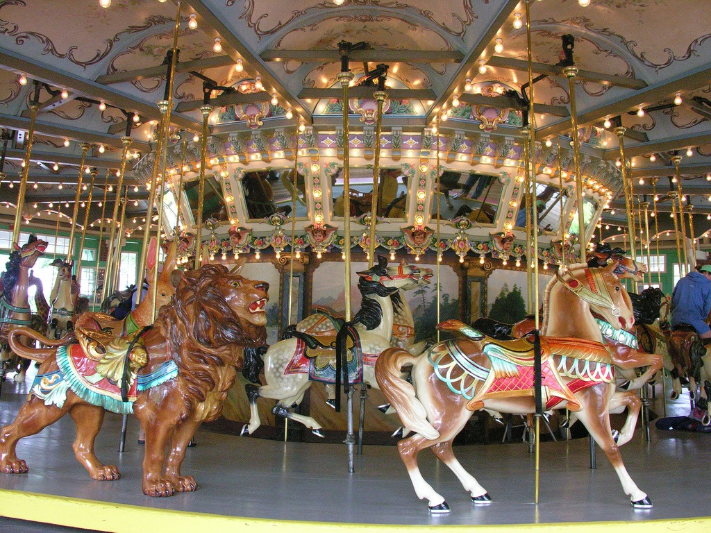
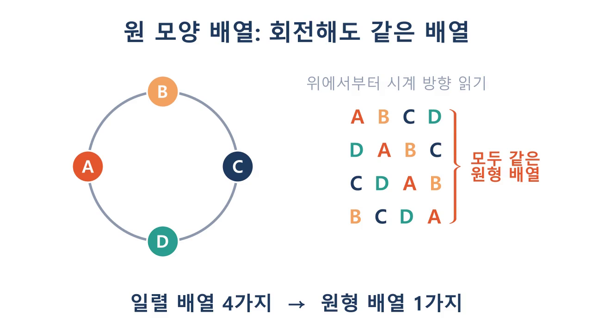

확률과 통계
대학교 1학년 공과대학 · 인터랙티브 웹 슬라이드

1주차 · 슬라이드
여러 가지 순열
원순열과 중복순열 · 인터랙티브 실험 7종
1주차 · 퀴즈
원순열·중복순열 퀴즈
8문항 · 풀 때마다 숫자가 바뀌는 문제 · 해설 포함

실습
manim 플레이그라운드
manim 스타일 코드를 고치면 바로 재생 · 예제 5개
대학교 1학년 공과대학 · 인터랙티브 웹 슬라이드

